台灣好樂園
2026主題樂園資訊平台改版
- UI/UX
- 網站改版
- 設計系統
以「依目的找樂園」為出發點，重新梳理主題樂園平台的資訊架構。以全台樂園地圖串起樂園、活動與遊玩資訊，並延續觀光署的品牌形象，建立一套能跨裝置沿用的設計系統。
看作品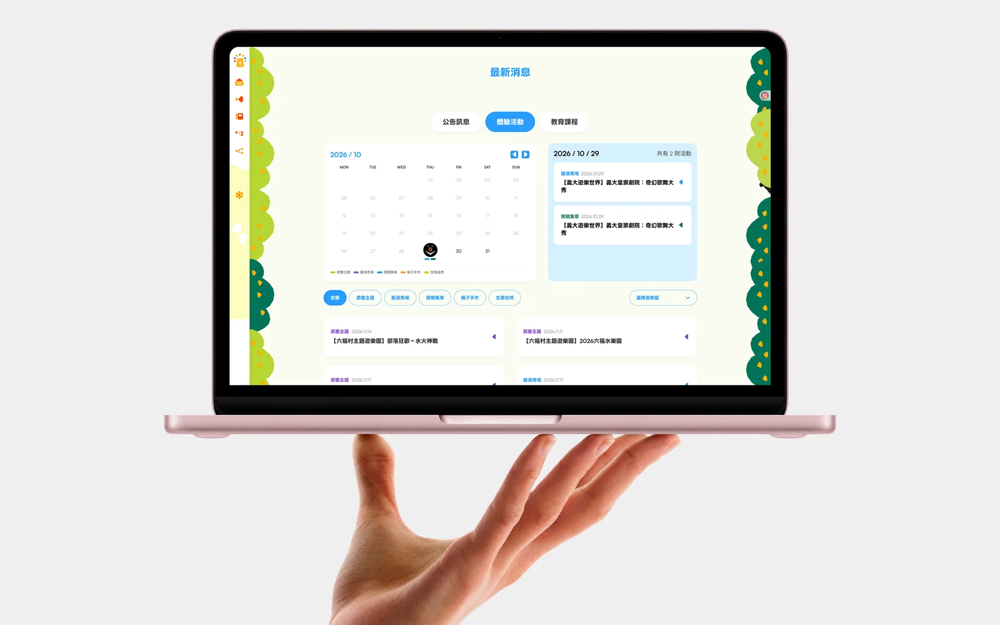
Lí-hó！我是威皓。
我是一名 UI/UX 設計師，喜歡把想法做成摸得到的東西：一個介面、一個網頁，或一盒桌遊。
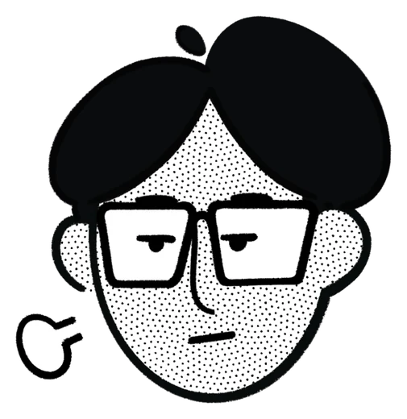
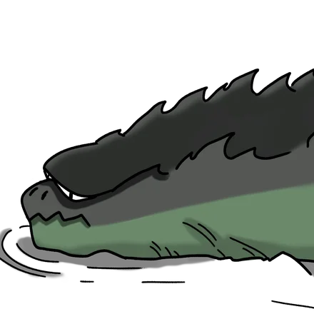

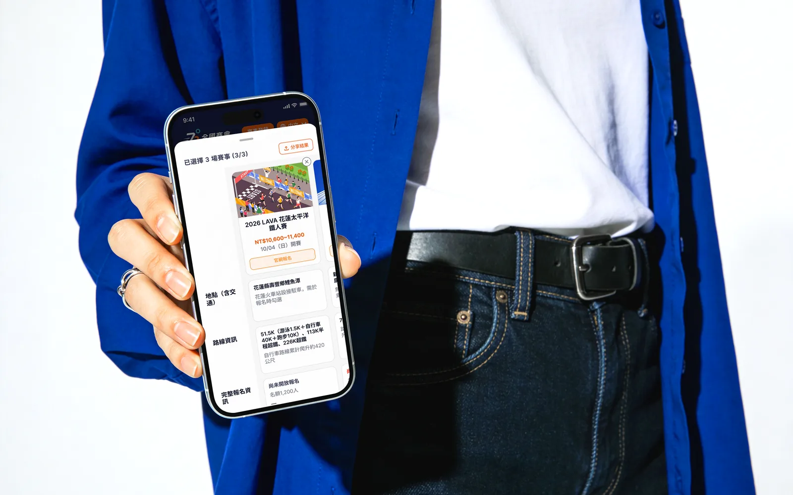
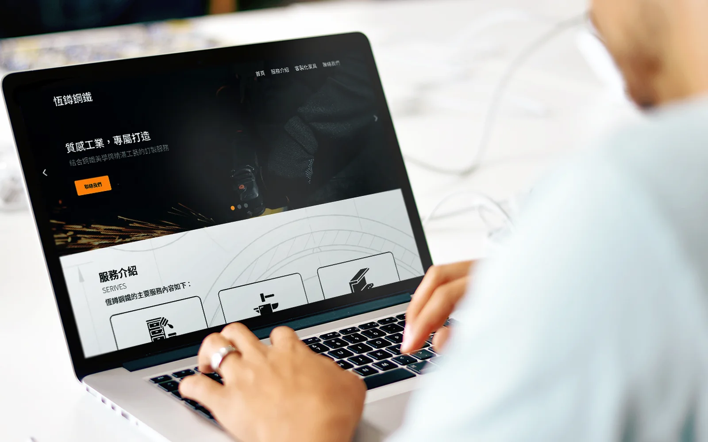
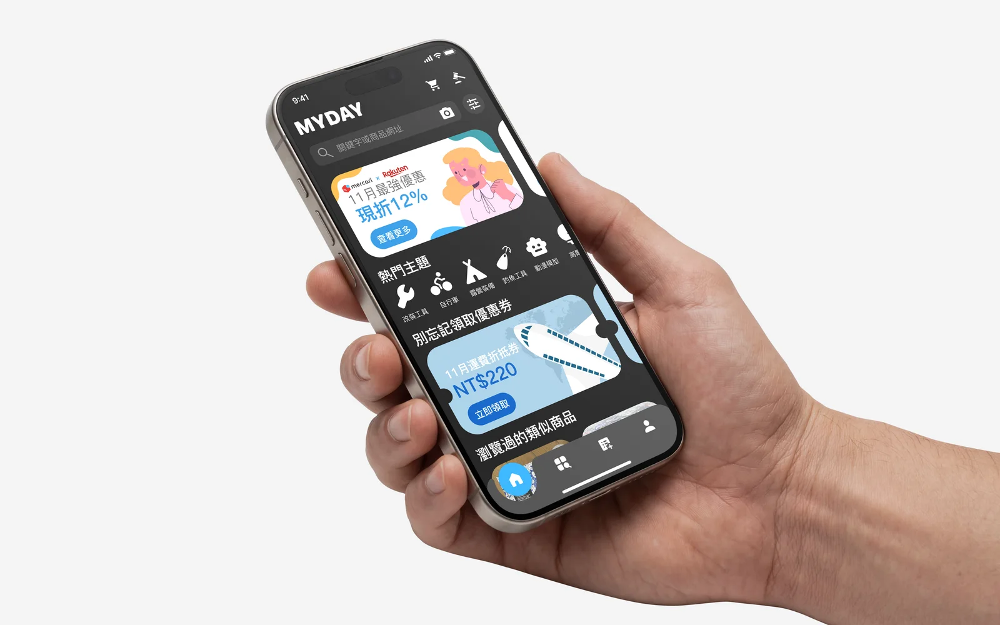
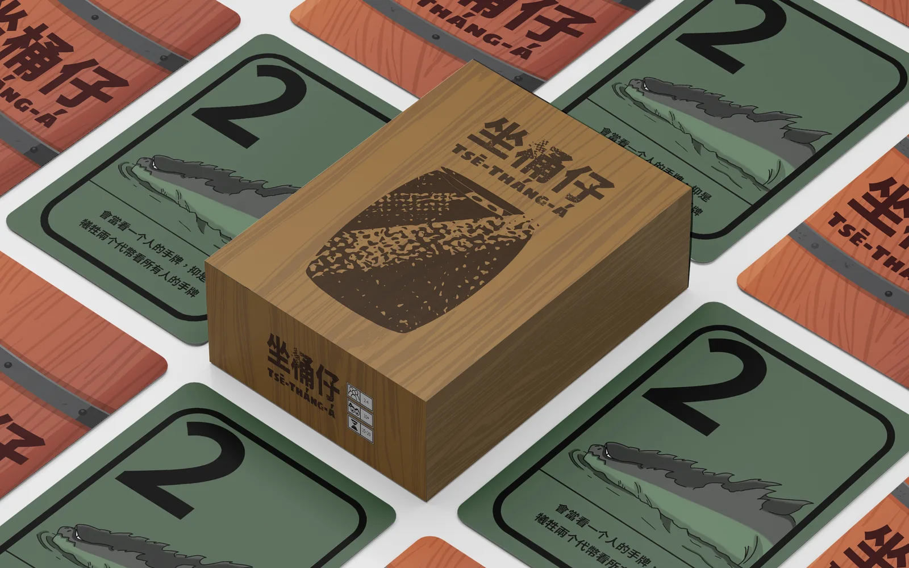
黃威皓，UI/UX 設計師。
喜歡動手，把想法拆開、排好，再做出來。習慣從使用者的問題出發，先釐清脈絡與需求，再一步步把複雜的資訊整理成清楚、好用的介面。參與過網站與 App 改版、企業形象網站設計，也曾一個人完成一套從規劃到印刷的桌遊。
熟悉 Figma 與 Adobe 系列工具，並善用 AI 把設計實作成能操作的網頁，持續探索設計從畫面走進真實使用的可能。
以「依目的找樂園」為出發點，重新梳理主題樂園平台的資訊架構。以全台樂園地圖串起樂園、活動與遊玩資訊，並延續觀光署的品牌形象，建立一套能跨裝置沿用的設計系統。
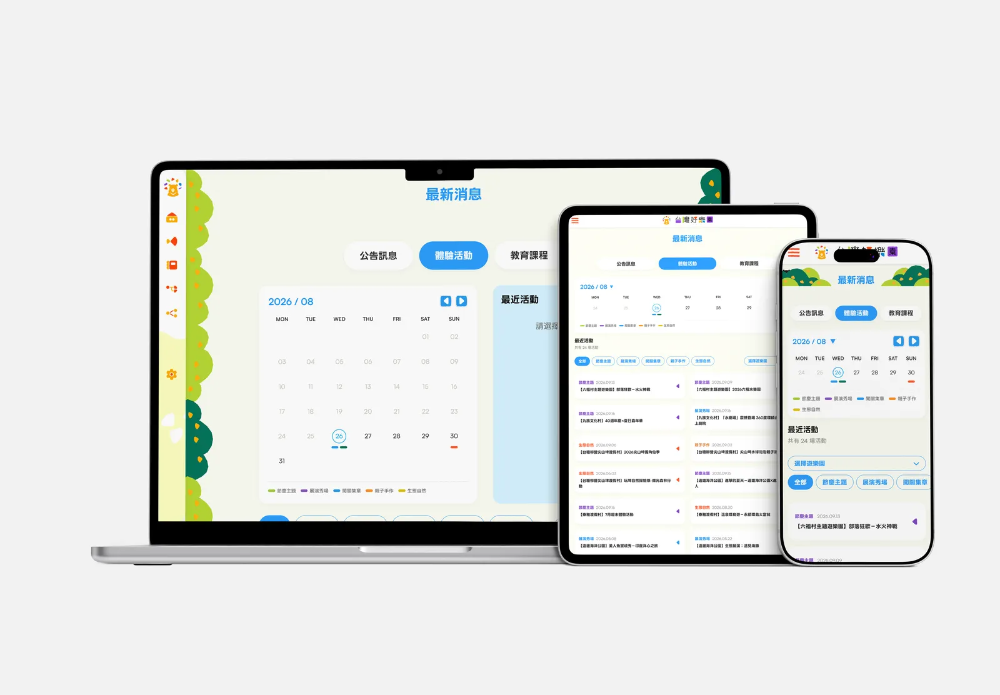
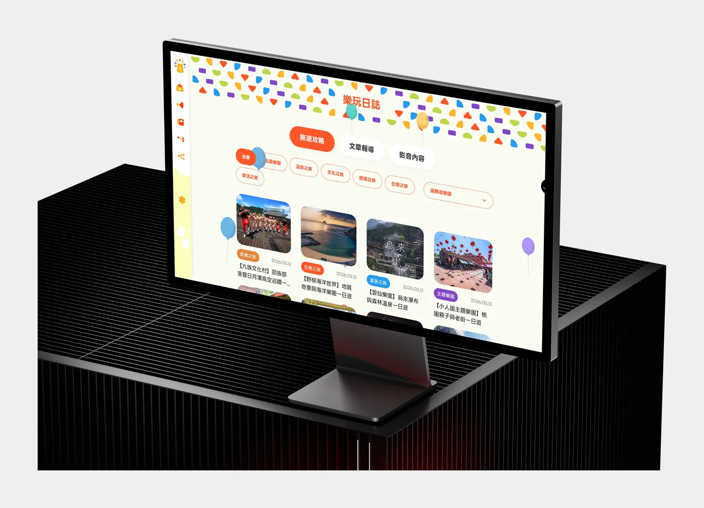
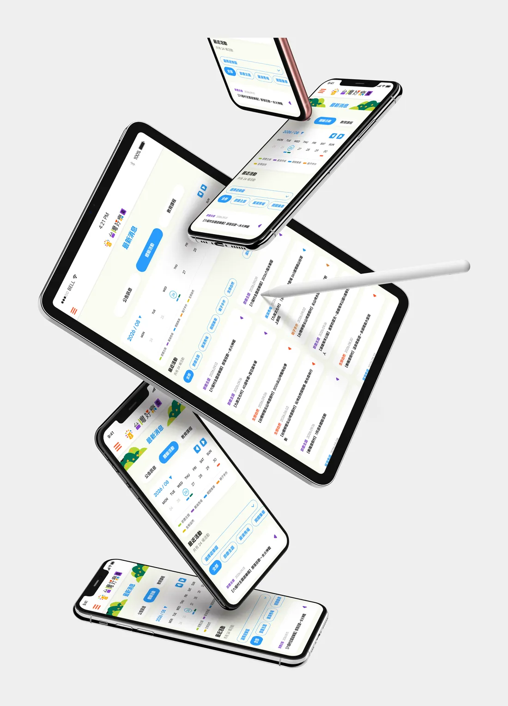
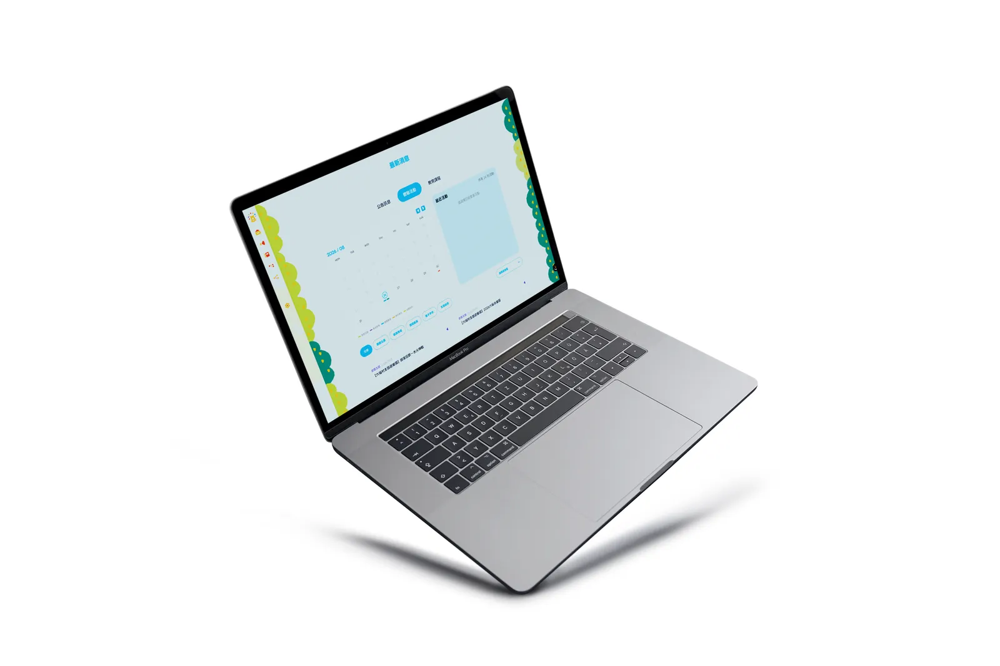
「跑者廣場」的全國賽會專區收錄全台路跑、超馬、越野與鐵人賽事，原本卻只是一張長長的表格。改版後以賽事卡片搭配篩選與並排比較，讓跑者不用來回翻找，就能挑出最適合自己的那一場。
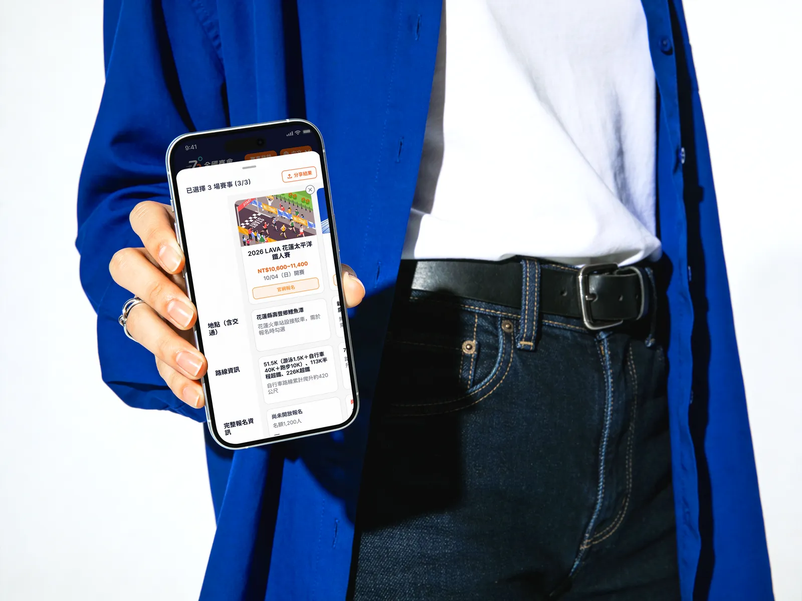
為鋼鐵訂製品牌打造的形象網站。以深色基調與飛濺的火花帶出「質感工業，專屬打造」的品牌個性，搭配清楚的服務介紹，讓工藝感與專業度一眼可見。
一款代購 App 的兩階段改版。從使用者訪談出發，重新整理搜尋、比價到委託的流程，讓委託從五個步驟縮短為三步，再建立一套統一的字體、色彩與間距規範。
以台灣海上妖怪傳說為題的卡牌桌遊，推出華語與台語兩個版本，讓孩子在遊戲的過程中，認識流傳在台灣海邊的在地故事。
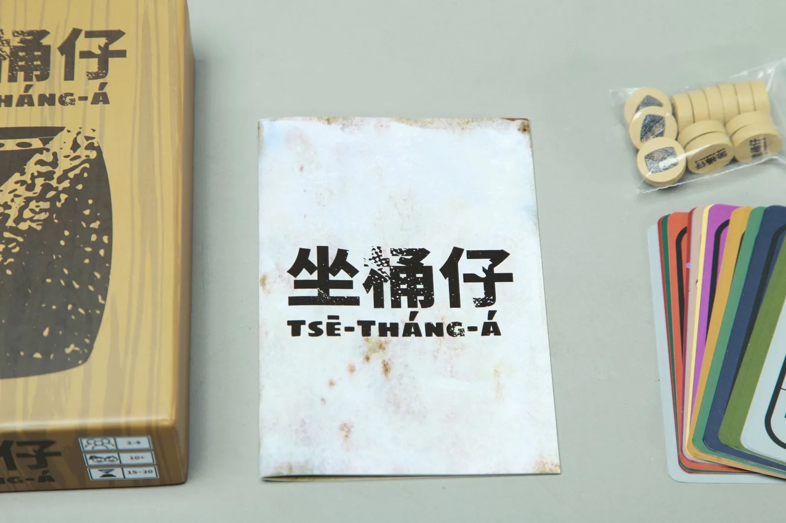
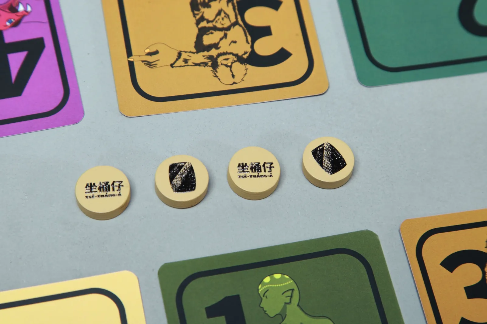